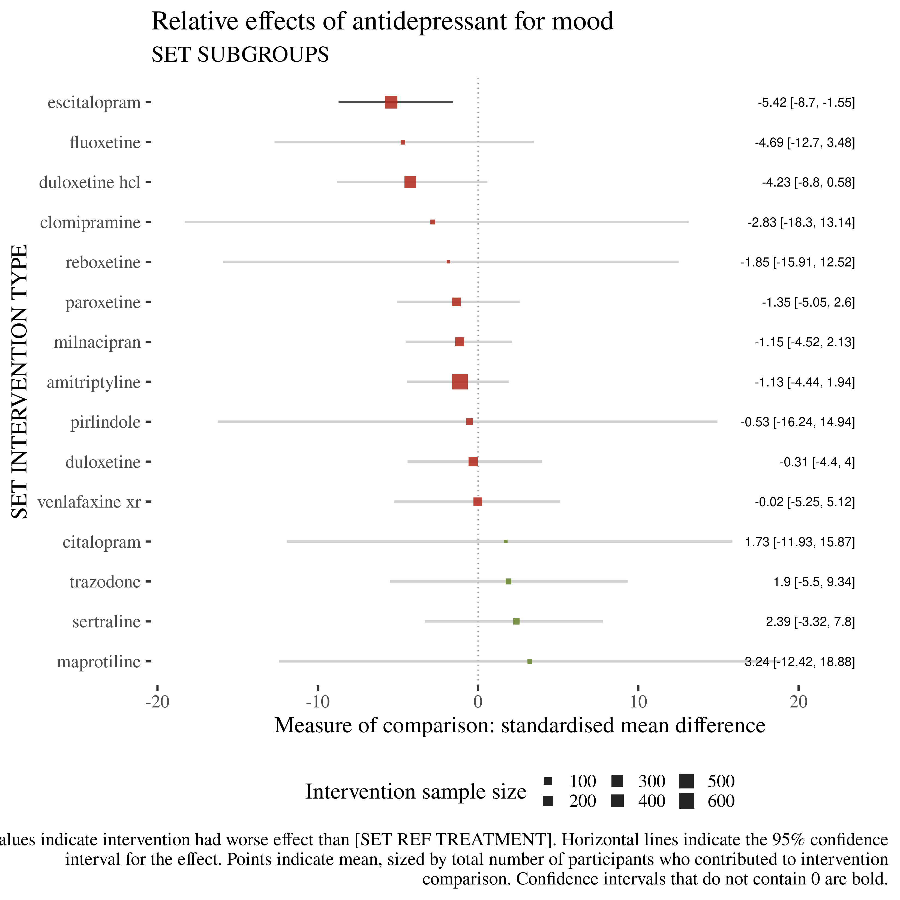

Skip to main content
Antidepressants for pain management in adults with chronic pain
Show table of contents
Table of contents
1
Overview
2
Pain intensity results
3
Mood results
4
Moderate pain intensity results
5
Substantial pain results
6
Adverse results
7
Quality of life results
8
Sleep results
9
Physical function results
10
Withdrawal results
11
Pipeline
11
Pipeline
11.1
Check figure sizing

11.2
Joining together Covidence export with Hollie’s extractions
11.3
Labelling protocol for Covidence
11.3.1
Labels not specific to outcome
11.3.1.1
Condition
11.3.1.2
Timepoint or change score
11.3.1.2.1
Unmatched timepoints
11.3.2
Labels specific to outcome
11.3.2.1
Scales
11.4
Checks
Check that key points in pipeline have the expected number of joins and meets.
11.5
subgroups
11.5.1
condition
11.6
Number of arms per study per timepoint
10
Withdrawal results
On this page
11
Pipeline
11.1
Check figure sizing
11.2
Joining together Covidence export with Hollie’s extractions
11.3
Labelling protocol for Covidence
11.3.1
Labels not specific to outcome
11.3.2
Labels specific to outcome
11.4
Checks
11.5
subgroups
11.5.1
condition
11.6
Number of arms per study per timepoint